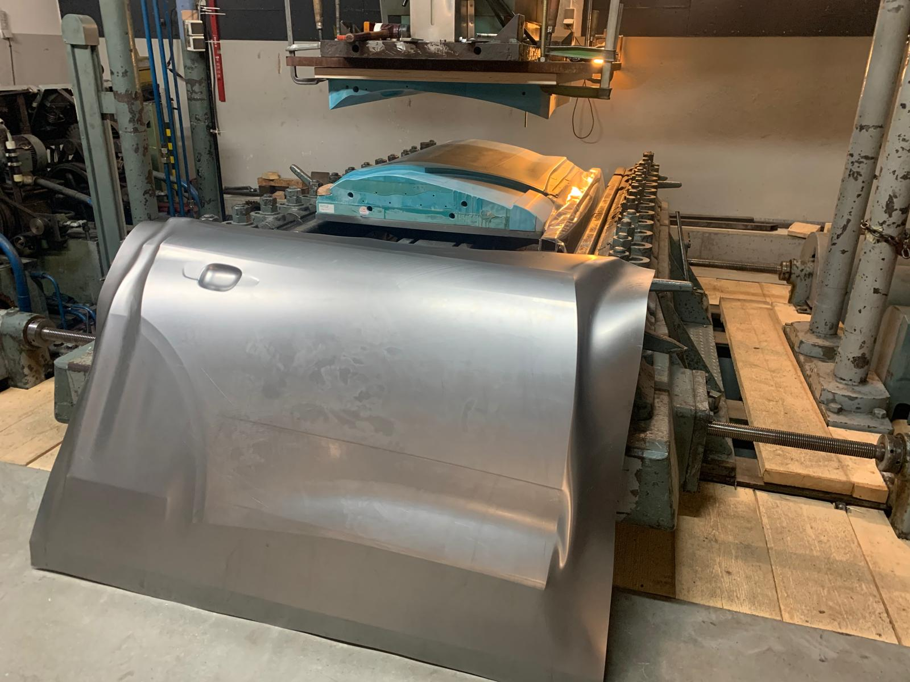
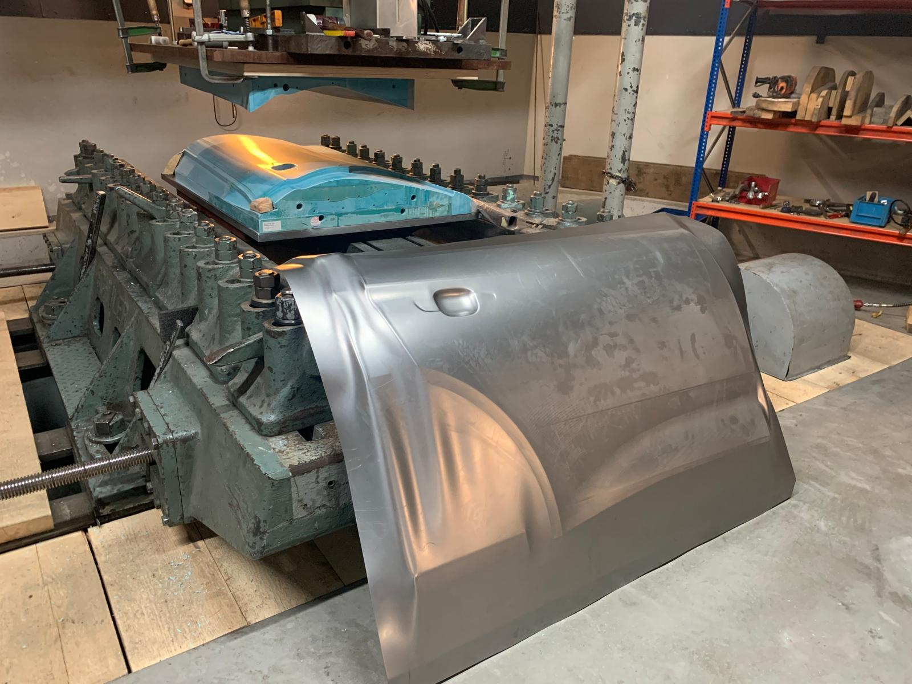
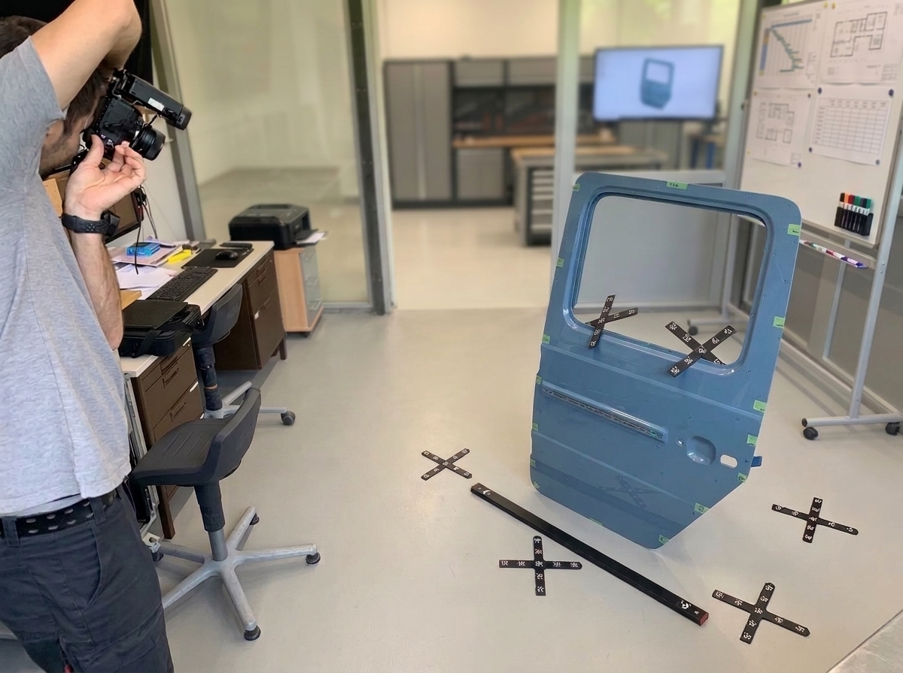
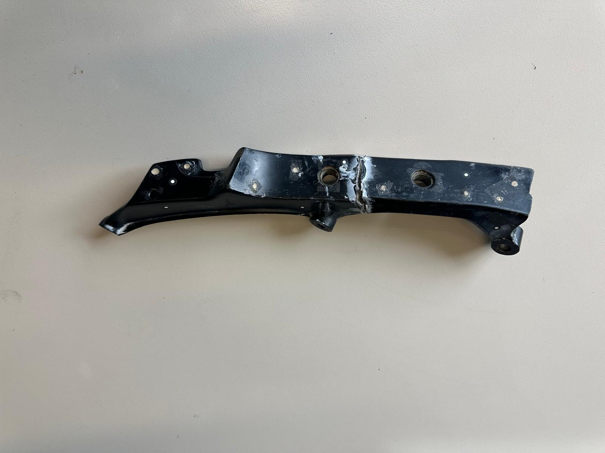
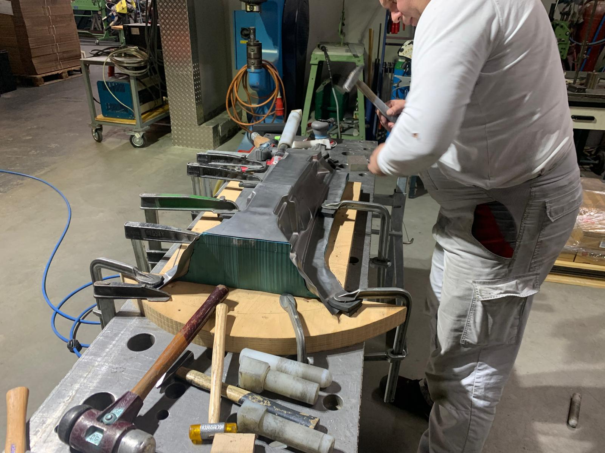

Focus on Exterior Skins: Stretch-Formed Large Panels.
The Benchmark: Roofs, Bonnets, Quarter Panels, Closures.

Dent-Resistant. Dimensionally Stable.
Targeted Strain Hardening & OEM Material Expertise.
Outstanding resistance against denting and handling deformation during assembly, proving-ground testing, or transport. Thermal oil-canning under sun exposure is completely eliminated—yielding razor-sharp reflections without body filler.

BIAXIAL TENSILE STRETCHING
HYDRAULIC GRIPPER JAWS FLAWLESS CLASS-A SURFACE FINISH
FLAWLESS CLASS-A SURFACE FINISH
Tooling Turnaround
in Days or Weeks instead of Months.
 Ureol Forming Die Inner Profile
Ureol Forming Die Inner Profile
 Wheel Arch Forming Tool
Wheel Arch Forming Tool
From OEM CAD to Certified Component.
Seamless Workflow to Automotive Standards.


From Clay Styling Model or Physical Buck
to Digital Twin and Finished Component.

Photogrammetric Targeting
High-contrast optical markers on design clay, package bucks, or physical parts ensure ultra-precise 360° point cloud acquisition across complex character lines.

Precision Fixturing
Rigid zero-play fixturing and datum alignment of physical models to reliably capture critical mounting interfaces and dimensions.

ZEISS GOM Digital Twin
Conversion of scan point clouds into clean, parametric Class-A CAD models—serving as the direct baseline for rapid tooling and part production.
From CNC Forming Die
to Dimensionally Certified Structural Member.
5-Axis CNC Forming Die
Precision-machined Ureol tooling buck with 100% CAD surface fidelity, integrated bead geometry, and CNC-located datum holes.

Guided Hand Forming
Controlled flanging, edge-dressing, and radius setting under high-pressure clamping directly over the forming die.

Contoured Structural Member
Laser-trimmed, geometrically verified structural stamping seating flush on inspection and forming tooling.
Complex BIW Components
in Low-Volume Production.

Wheel Arch Ureol Tooling Buck
Clamped on the modular 3D fixturing table, flanked by dedicated bossing mallets, forming dollies, and toggle clamps for precise wheel-arch hem flanging.

Secondary Operations Fixturing
Forming dies locate and clamp the pre-formed panel for precision manual trimming, piercing, and restriking operations.

Fully Formed Fender / Wing
Fully formed fender on master inspection fixture—ready for direct integration into Body-in-White (BIW) assembly.